以下の二つの方法を紹介する．
- Microsoft Visual Studioを用いる（Windows編/Mac編． 初心者向け）
- .NET SDKのインストール （Windows/Mac ほぼ共通）をしてコマンドラインインターフェースにて演習を進める（中級者向け）
後者は，仮想端末での作業に抵抗がなくかつ好みのエディタ（VSCode，Emacs，Viクローン等）を使用したい人にはおススメである．本ページではLinuxにおける環境の構築法については述べない．
なお，このページで紹介している方法ではF#演習のための環境構築にもなっている． C#演習の第5週・第6週目の課題を進めるにはさらなる準備（別ページ）が必要である（こちらはC#演習分のみ）．
（本ページに掲載されているスクリーンショットは，マイクロソフトの許諾を得て使用しています．）
Caution
.NET 5 は 2022年5月8日にサポートが終了する予定である．それ以降は，.NET 6をサポートしない Visual Studio 2019 を始め，使用にリスクが生じる．C#演習の第5週・第6週目の課題を進めるために必要な Eto.Forms が Visual Studio 2022 および .NET 6 に対応したら，Visual Studio 2019等ではなく，Visual Studio 2022を利用するようにすることを勧める．
Visual Studioのインストール
Windows編
WindowsではVisual Studio Community 2019 （最新版ではない）を用いる．
Note
最新版はVisual Studio Community 2022だが，C#演習の第5週・第6週目の課題で使用するライブラリを使用するためのVisual Studio拡張がVisual Studio 2019向けであるためである．プロジェクトやソリューションの作成をコマンドラインで実行した後で，Visual Studioを使うことも可能であるので，Visual Studio Community 2022でも演習を進めること自体は可能である．あるいは，ディスク容量とインストール時間さえ気にしなければ，Visual Studio Community 2022をまずはインストールし，C#演習の第5週・第6週目の課題を進めるときだけ Visual Studio Community 2019を用いることも可能である．
インストール中はネットワーク接続が必要なことに注意する．
Visual Studio 2019のリリースノートより， "Download Community 2019 ↓"と書かれた青いボタンを押し，Visual Studio Community 2019をダウンロードする．
すると
vs_community__英数字の列.exeというファイルがダウンロードされる．ダウンロードしたファイルを実行する．ライセンス条項には目を通しておこう．
- 途中でインストールする項目が聞かれるので，「ワークロード」タブにある「.NETデスクトップ開発」をチェックし，その「インストール詳細」から 「F# デスクトップ言語のサポート」にもチェックを入れる．6 GB強のディスク容量が必要となる．
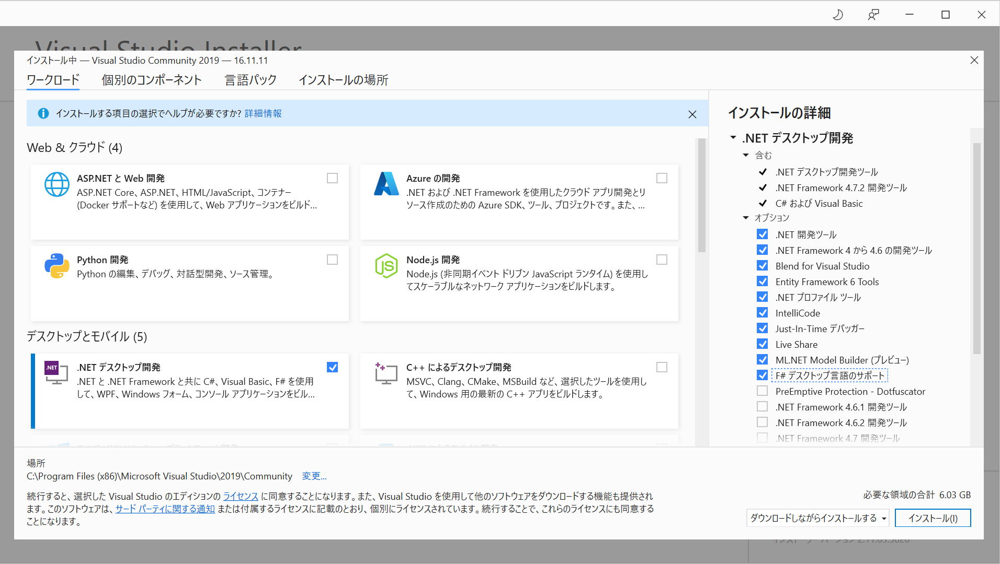
「インストール」ボタンを押してインストールを完了させる．1.5 GBほどのダウンロードが生じるので高速なネット回線が利用可能なところで行おう．
起動時にいろいろ聞かれるが適当に答えたのでよい（サインインのアカウントも好きなものでよいし，設定しなくてもよい）．インストールが終了すると自動的にVisual Studio 2019が起動され，以下の画面が表示される．インストーラのウィンドウのほうは閉じてOK．
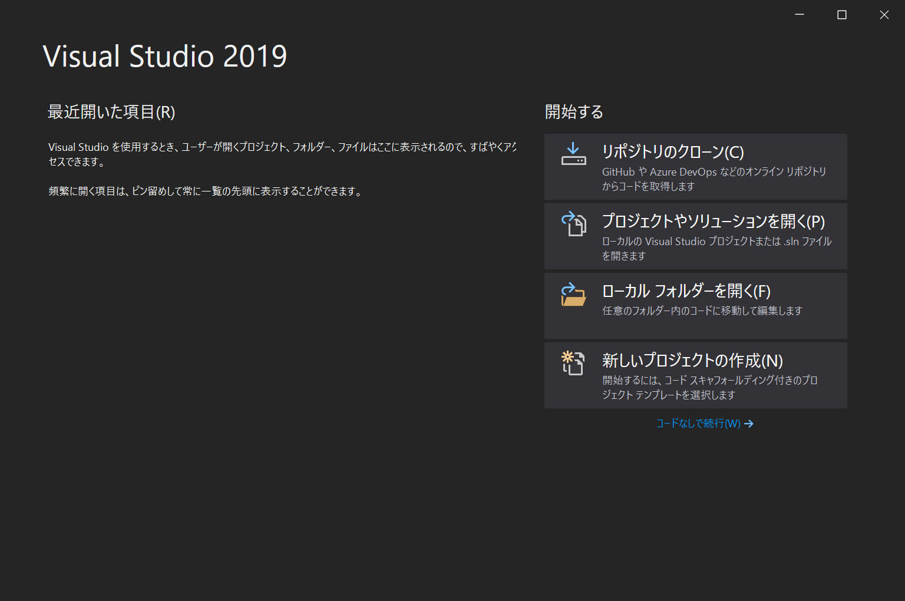
動作確認もしておこう．
上記で「新しいプロジェクトの作成」を選ぶ．
テンプレート選択画面で，C#の「コンソール アプリケーション」を選ぶ．
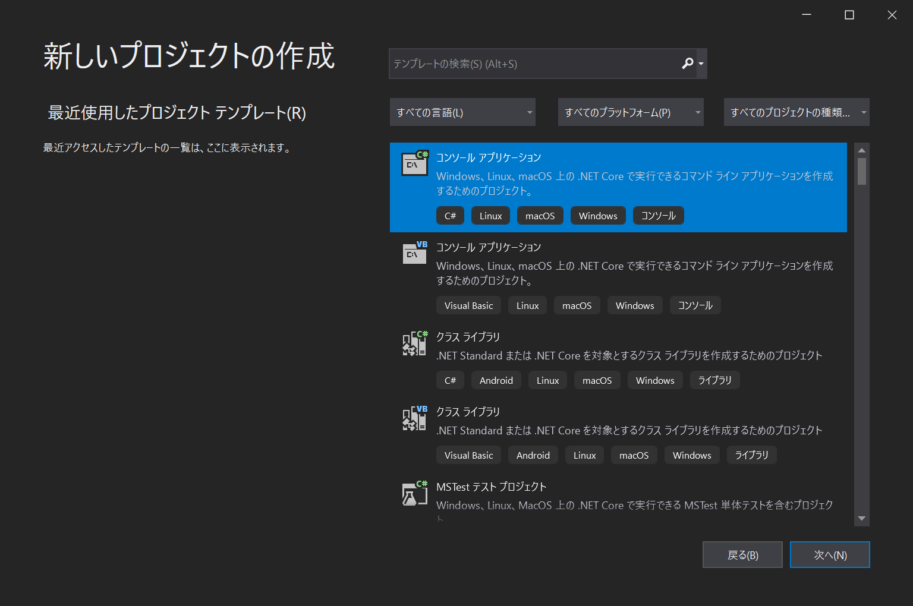
プロジェクト名とソリューション名を聞かれるので適当に入力する．たとえば，どちらも
HelloWorldCSにしたのでよい（CSはC#の気持ち）．Note
プロジェクトは一つの実行形式やライブラリを作成するためのコード等を全てまとめたものであり，ソリューションは関連するプロジェクトをまとめたもの（参考：What are solutions and projects in Visual Studio?）．あえて英語版にリンクしたのは，日本語版だと"a project contains all files that are compiled into an executable, library, or website"の"a"や"an"がうまく訳出されていないように感じたため．
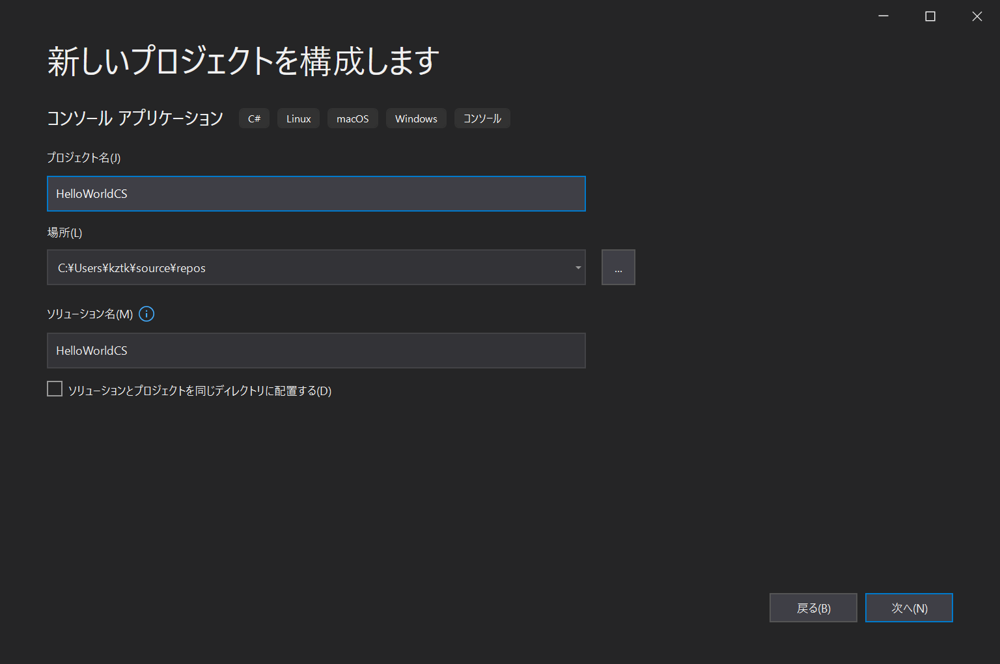
フレームワークを選んで「作成」する．ここではデフォルトのままでよい．
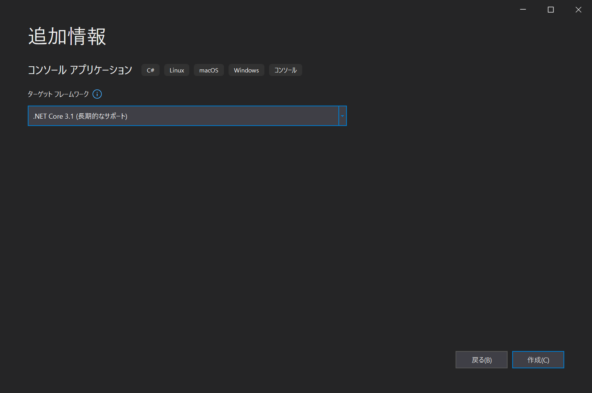
エディタで
Program.csが開かれた状態になる．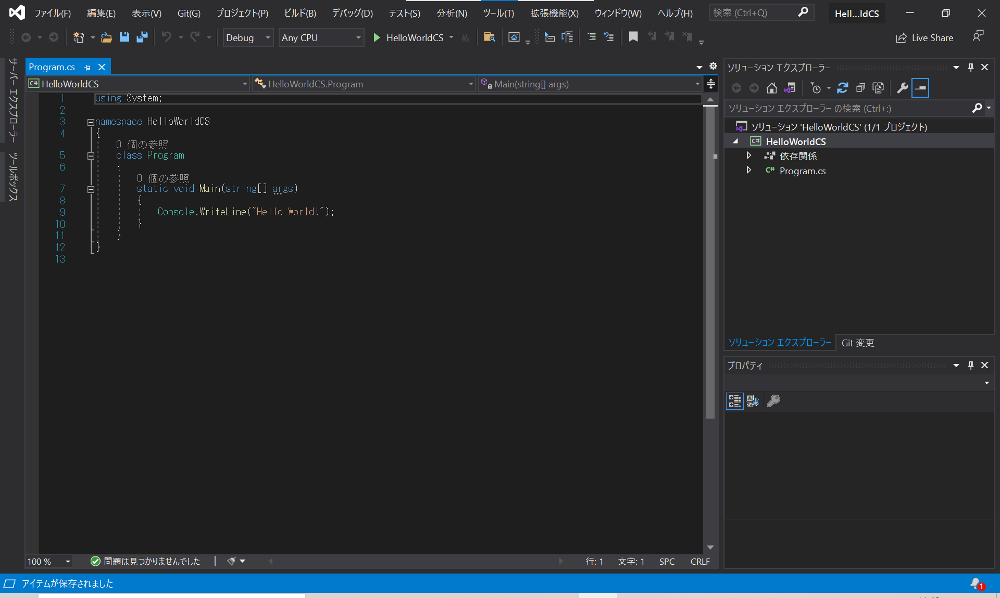
コードを実行するには上のツールバーの真ん中あたりにある「▶ HelloWorldCS」と書かれたボタンを押す．すると，ビルドが行われ実行形式が作成された後にその実行形式が実行される．ビルド時の出力等が表示された後に，「Microsoft Visual Studio デバッグコンソール」に
Hello, World!と表示されればOK．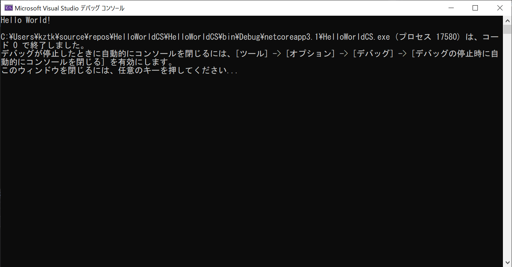
F#でも同様であることを確認しておこう（新しいプロジェクトを作成する際のテンプレートを選ぶ場面で，「すべての言語」を「F#」に変更し，「コンソール アプリケーション」を選べばよい）．
Note
もし以上のとおりやった上でF#でのビルドに失敗し，「パッケージ FSharp.Core が見つかりません。ソース Microsoft Visual Studio Offline Packages には、この ID のパッケージが存在しません。」というエラーメッセージが出る場合は，コマンドライン（WindowsだとPowerShellか「コマンド プロンプト」を利用）から
dotnet nuget add source https://api.nuget.org/v3/index.json -n nuget.orgを実行する．あるいは，以下の「.NET SDKのインストール （Windows/Mac ほぼ共通）」の手順1～4を読みSDKをインストールするとよい．（それでも直らなければ，教員・TAに質問をしてください．）
Mac編
C#演習ではVisual Studio 2019 for Macではなく，Visual Studio 2022 for Mac Previewの使用を推奨する．
Note
Visual Studio 2019 for Macだと，少くとも私の環境において，第5回および第6回の講義で利用予定であるEto.Formsの利用に問題が生じためである．より具体的には，私の環境だと指示の通りに Eto.Addin.MonoDevelop.mpack の最新版をReleaseページからダウンロードし，拡張機能としてインストールした後で，テンプレート選択画面で Eto.Forms を選んでプロジェクトを作成しようとするとソリューション名入力画面でVisual Studioが高い割合で落ちる．
プロジェクトやソリューションの作成をコマンドラインで実行した後で，Visual Studioを使うことも可能であるので，Visual Studio 2019 for Macでも演習を進めること自体は可能である．あるいは，ディスク容量とインストール時間さえ気にしなければ，Visual Studio 2019 for Macをまずはインストールし， C#の演習の第5・6回目の内容をすすめるときだけ，Visual Studio 2022 for Macを使うという手もある．
インストール中はネットワーク接続が必要なことに注意する．
Visual Studio 2022 for Mac プレビューのダウンロードページより， Visual Studio 2022 for Macをダウンロードする．
すると
visualstudioformacpreviewinstaller-17.0.0.191.dmgみたいな名前のファイルがダウンロードされる（数字の部分はダウンロードするタイミングによって違うかもしれない）．「ダウンロード」から上のファイルをクリックする（あるいはFinderでダブルクリックすると），どでかいアイコンが表示されたウィンドウが表示されるので，アイコンをダブルクリックしてインストールを開始する．
「“Install Visual Studio for Mac Preview.app”はインターネットからダウンロードされたアプリケーションです。開いてもよろしいですか?」と聞かれるので，「開く」．
すると「Visual Studio for Mac Previewをダウンロードしていただき、ありがとうございます」と書かれた画面が表示される．ライセンス条項を確認し問題なければ「続行」を選んでインストールを続ける．
「何をインストールしますか？」と聞かれる．「.NET」だけ選べば十分．
あとは，画面に従ってインストールを完了させる（数十分ほど時間がかかるかもしれない）．また，何度かパスワードが聞かれる．
上で「完了時にVisual Studio Previewを開く」をチェックしていたら（なにもしていなければそうなっているはず），インストールが終了すると自動的にVisual Studio 2022 for Macが起動される．起動時にいろいろ聞かれるが適当に答えたのでよい（サインインのアカウントも好きなものでよいし，設定しなくてもよい）．最終的に「Visual Studio 2022 for Mac」と書かれたウィンドウが表示される．
- 2022年3月18日現在ではまだローカライズが完全でないようであり，一部英語の項目等が残っている．
動作確認もしておこう．
Caution
ガイドラインを見ると， Visual Studio 2022 for Macはまだ正式リリース前なのでスクリーンショットを掲載できないようである．よって，代わりにVisual Studio 2019 for Macのものを用いる．画面の構成に大きく違いがあれば都度述べる．
上記のウィンドウ（一旦Visual Studioを閉じても，また起動すれば上記が表示される）で，「New」あるいは「新規」を選択する．
テンプレート選択画面で「Console Application」あるいは「コンソールアプリケーション」を選ぶ．
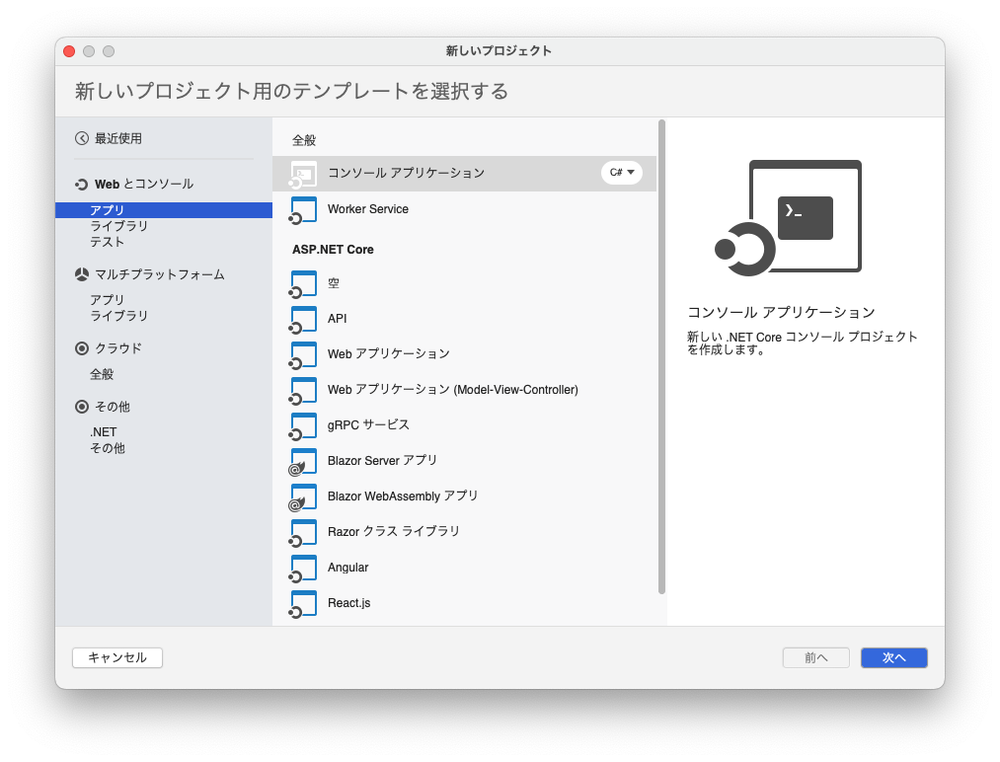
- C#/F#の部分は使用する言語を選ぶ．両方の言語について動作確認しよう．
ターゲットフレームワークを聞かれるので適当に選ぶ．
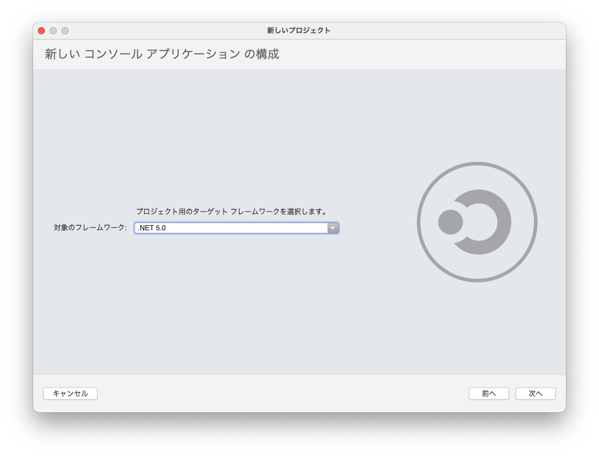
- Visual Studio 2022 for Macでは「.NET 6.0」も選べる．.NET 6.0を選ぶとテンプレートに含まれるHello Worldのプログラムが， C# 9.0の新機能を利用したものとなる．
プロジェクト名とソリューション名を聞かれるので適当に入力する．たとえば，どちらも
HelloWorldCSにしたのでよい（CSはC#の気持ち）．Note
プロジェクトは一つの実行形式やライブラリを作成するためのコード等を全てまとめたものであり，ソリューションは関連するプロジェクトをまとめたもの（参考：What are solutions and projects in Visual Studio?）．
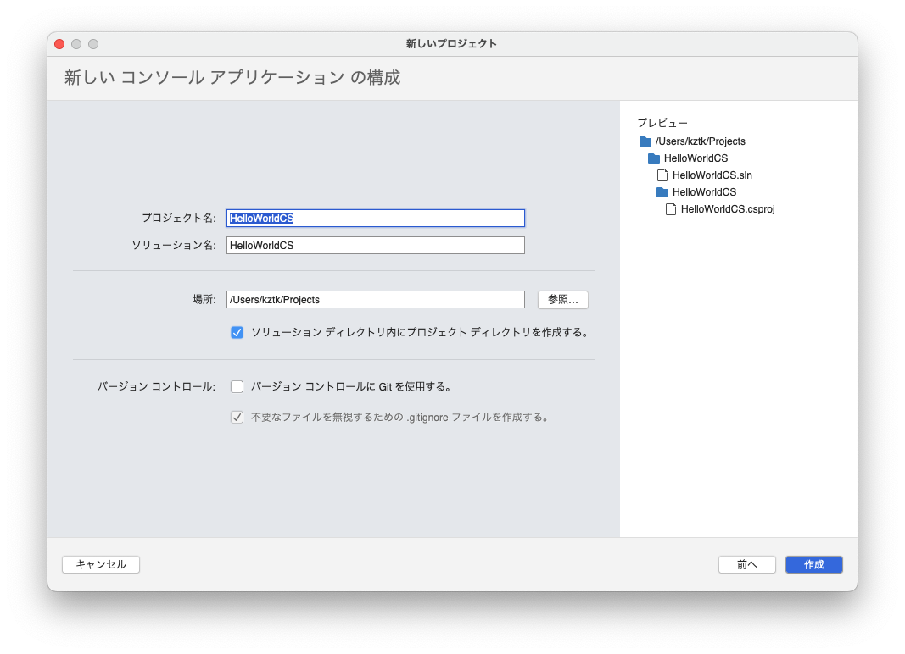
エディタで
Program.csが開かれた状態になる．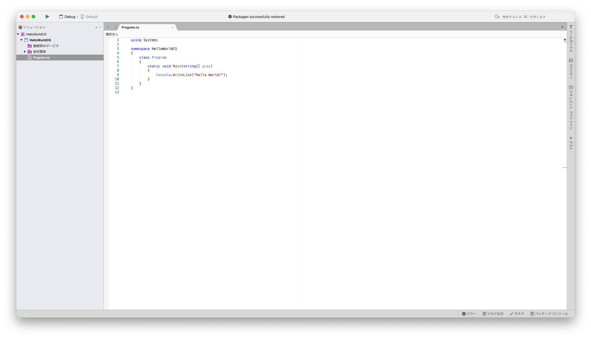
コードを実行するには左上のほうにある▶ボタンを押す．すると，ビルドが行われ実行形式が作成された後にその実行形式が実行される．ビルド時の出力等がされた後に以下のように「Terminal」/「ターミナル」に
Hello, World!と表示されればOK．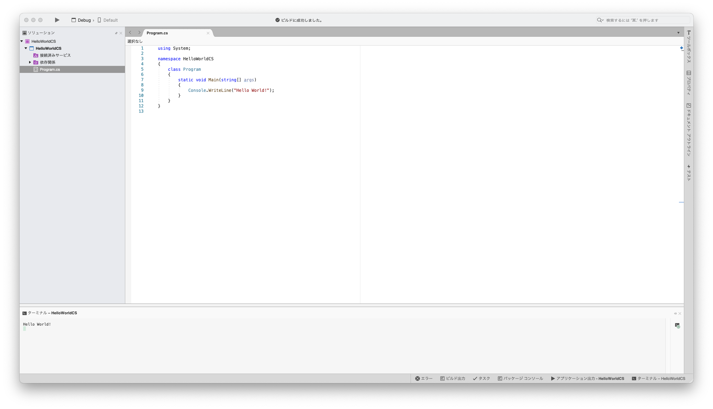
上記の動作確認はC#/F#の両方について行おう．
Note
もし以上のとおりやった上でF#でのビルドに失敗し，「パッケージ FSharp.Core が見つかりません。ソース Microsoft Visual Studio Offline Packages には、この ID のパッケージが存在しません。」というエラーメッセージが出る場合は，コマンドライン（MacだとTerminal.app）から
dotnet nuget add source https://api.nuget.org/v3/index.json -n nuget.orgを実行する．あるいは，以下の「.NET SDKのインストール （Windows/Mac ほぼ共通）」の手順1～4を読みSDKをインストールするとよい．（それでも直らなければ，教員・TAに質問をしてください．）
.NET SDKのインストール （Windows/Mac ほぼ共通）
Visual Studioに含まれているので，上記を行っている場合は以下を行う必要はない．
.NET SDKのダウンロードページより，software development kit (SDK)をダウンロードする．
- Windowsの人はWindows版のSDKをダウンロードする．
- Mac版についてはいわゆるintel MacとM1 Macではダウンロードするものが違うので注意．前者はx64版を後者はArm64版をダウンロードしよう．
ダウンロードしたインストーラを実行し，指示に従ってインストールを完了する．
- Windows版なら
dotnet-sdk-6.0.201-win-x64.exeみたいな名前 - Macのx64版なら
dotnet-sdk-6.0.201-osx-x64.pkgみたいな名前
- Windows版なら
ターミナル（WindowsだとPowerShellか「コマンド プロンプト」，MacだとTerminal.appやiTerm.app）を開き，以下を実行する．
dotnet --list-sdks以下は私の環境における出力だが，このようにダウンロードしたSDK（6.0.XXX）が表示されたらばOK．
3.1.417 [/usr/local/share/dotnet/sdk] 5.0.406 [/usr/local/share/dotnet/sdk] 6.0.201 [/usr/local/share/dotnet/sdk]動作確認もしておこう．
適当なディレクトリに移動して以下を実行する．
dotnet new console -o HelloWorldCS --langVersion 8.0Note
--langVersion 8.0の部分は必須ではない．単に，Visual Studio 2019 にて C#の「コンソール アプリケーション」テンプレートと生成されるHello Worldのコードを一致させたかったためである．なお，上述のように Visual Studio 2022 を使用した場合は，下記とは異なるHello Worldのコード（C# 9.0の機能を利用したもの）が出力される．HelloWorldCSというディレクトリができているので，そこに移動する．cd HelloWorldCS中身を
lsで確認してみよう．たとえば，Macだと以下のように表示される（Windowsだとlsはdirの別名なので，表示は多少異なる）．HelloWorldCS.csproj Program.cs obj/プログラムを書くには，
Program.csを変更すればよい．現時点ではProgram.csの中身は以下の通りである．using System; namespace HelloWorldCS { class Program { static void Main(string[] args) { Console.WriteLine("Hello, World!"); } } }以下をを実行してビルドする．
dotnet build以下を実行してビルドしたプログラムを実行する．
dotnet runすると，"Hello, World!"が表示されるのが確認できるはずだ．
F#でも同様であることを確認しておこう（
dotnet newを実行する場面で，dotnet new console -o HelloWorldCSの代わりにdotnet new console -lang "F#" -o HelloWorldFSとする．また，このコマンドだとHelloWorldCSではなくHelloWorldFSというディレクトリが作成される）Note
F#でもターゲットフレームワークが .NET 5.0 のときと .NET 6.0 のときで出力される Hello World のコードが変わる．